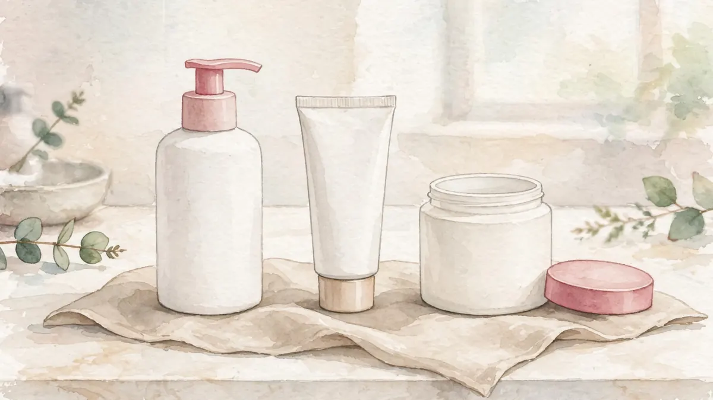

トップ ＞ ボディケア ＞ 容器で変わる使い勝手（ポンプ・チューブ・ジャー）
容器で変わる使い勝手（ポンプ・チューブ・ジャー）

ボディケアアイテムは、中身だけでなく容器の形でも使い勝手が大きく変わります。施術の現場では、施術中に片手で扱えるかどうかが重要なため、容器選びには敏感です。この記事では、代表的な3つの容器の特徴を整理します。
ポンプ式：量がそろいやすい
ポンプ式の良さは、1プッシュの量が一定なことです。「脚は◯プッシュ」というように、量を回数で管理できます。片手で扱えるため、塗っている最中に継ぎ足すのも簡単です。一方で、残量が少なくなると出にくくなり、最後の分を取り出しにくい形でもあります。置き場所の高さや、浴室・脱衣所での安定感も選ぶポイントです。
チューブ式とジャー式の特徴
チューブ式は、出す量を細かく調整でき、持ち運びにも向いています。逆さに立てて置けるタイプは、最後まで出しやすい工夫です。ジャー（広口の容器）式は、量を指で取りやすく、こっくりした質感のアイテムに多い形です。ただし、指で直接取る形になるため、手を清潔にしてから使うことと、フタの開閉の手間が考慮点になります。
どの容器にも、得意な場面があります。自宅でじっくり使うならジャー、洗面所で素早く使うならポンプ、持ち歩くならチューブ、といった具合です。
置き場所と、容器の相性
容器選びは、置き場所とセットで考えます。脱衣所の狭い棚には倒れにくい形、浴室の中に置くなら水が入りにくい形、といった具合です。施術の現場でも、置く場所の高さと容器の形の相性で、作業のしやすさが変わります。
中身が気に入っているのに使い勝手が合わない場合は、詰め替え用の小分け容器に移す方法もあります。その際は、商品名と開封日を書いておく管理を忘れずにどうぞ。
詰め替え用がある商品では、容器の扱いも使い勝手の一部です。詰め替えの際は、容器を洗ってよく乾かしてから入れるのが基本とされていますが、方法は商品の案内に従ってください。詰め替えた日付を容器に書いておくと、開封時期の管理にもなります。また、ポンプの頭部分やジャーのフタの裏は、汚れがたまりやすい場所です。月に一度、棚卸しのついでに拭き取るだけでも、衛生面の安心感が変わります。容器は中身を守るものでもあるので、扱い方まで含めて「使い勝手」と考えたいところです。
買い替えのときは、今の容器の「困った点」をひとつ挙げてみてください。出しにくい、倒れやすい、最後まで使えない。その不満が、次の容器選びの基準になります。中身だけでなく、容器への不満も記録しておくことが、買い物の失敗を減らす材料になります。
セラフィナ「容器の形で、毎日の使い勝手はだいぶ変わるんだね」